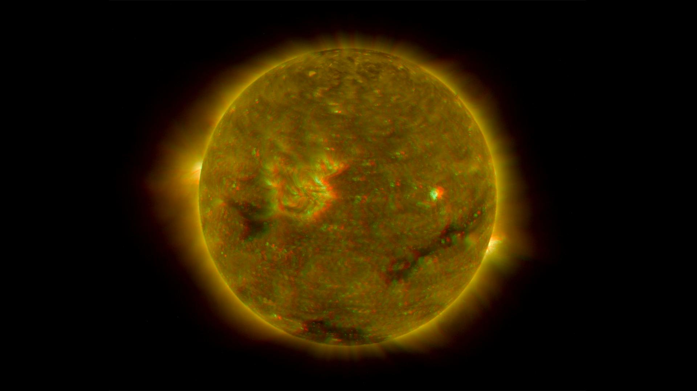
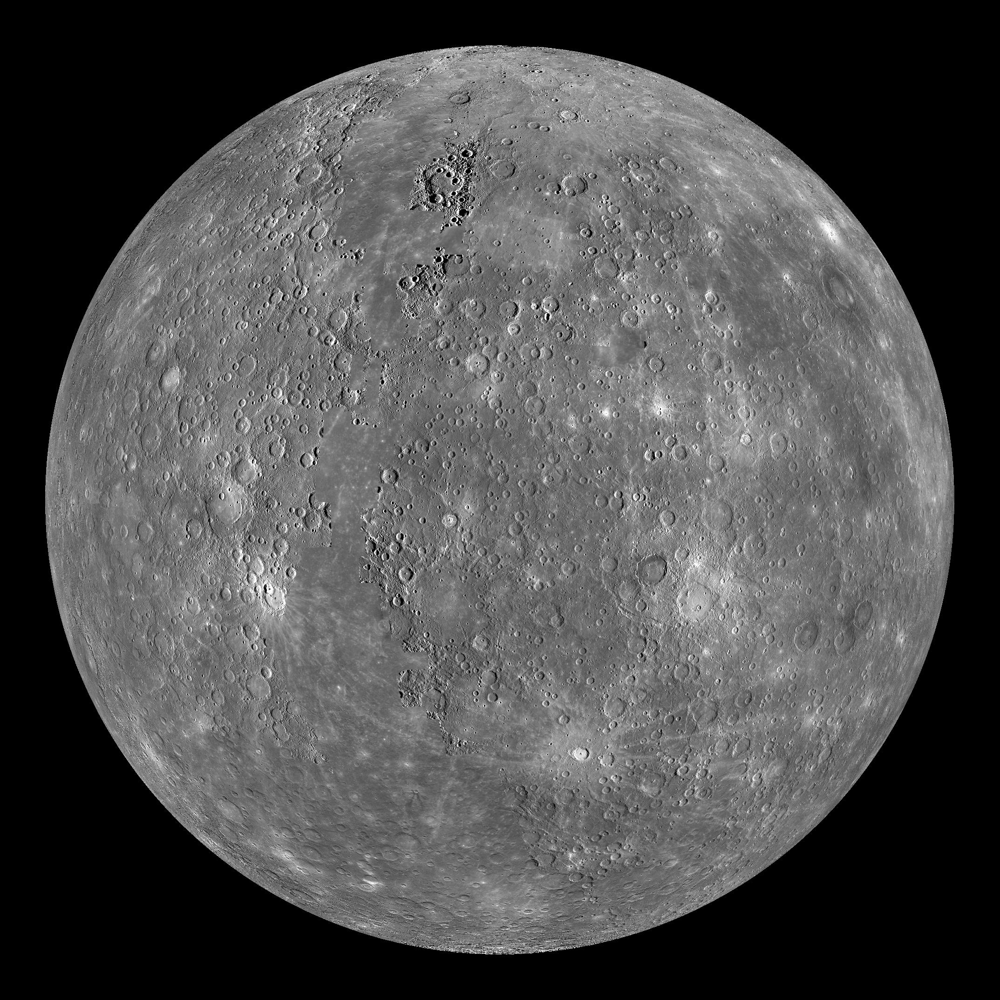
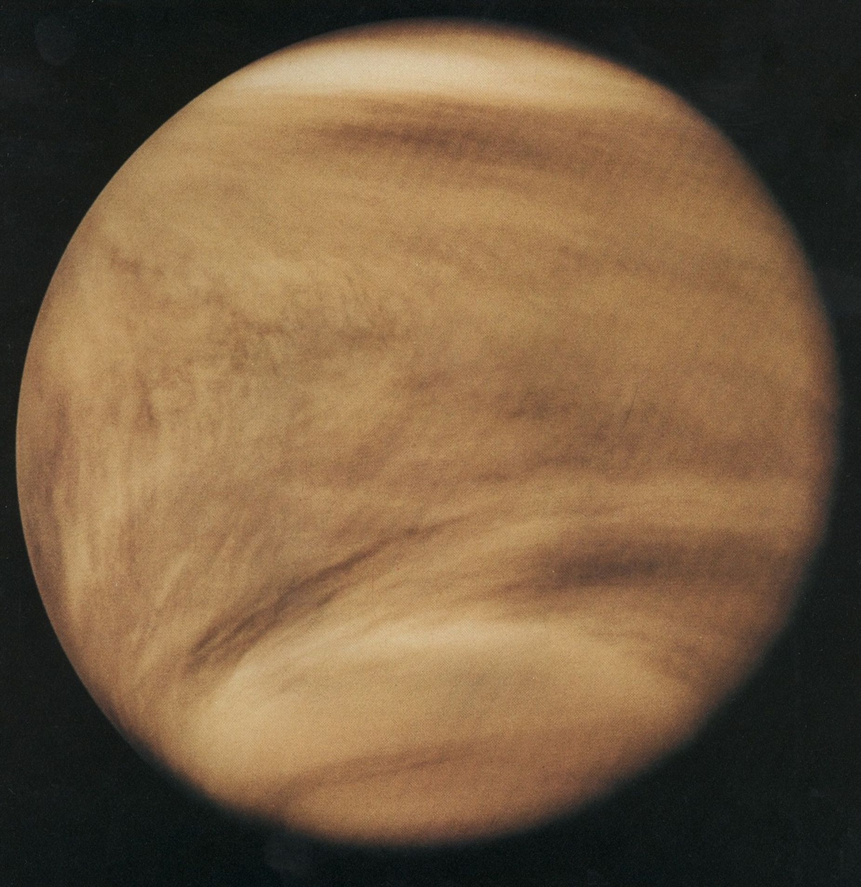
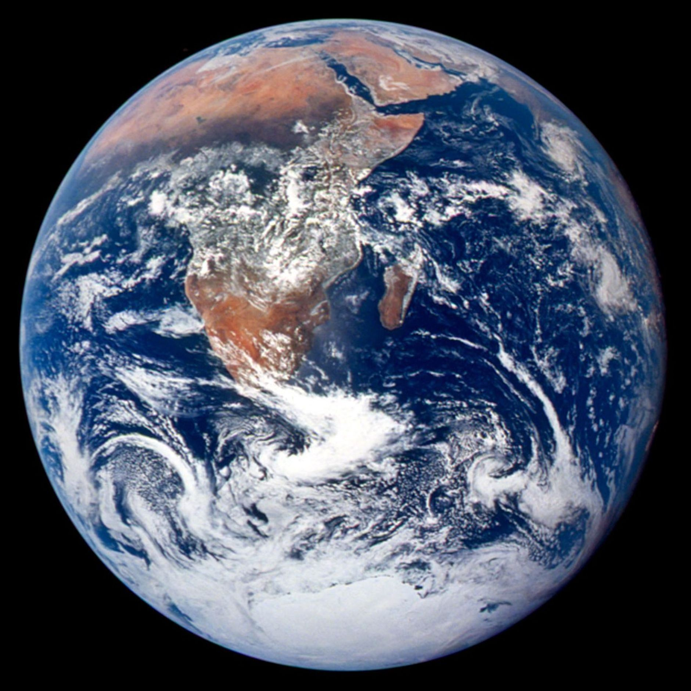
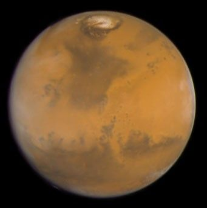
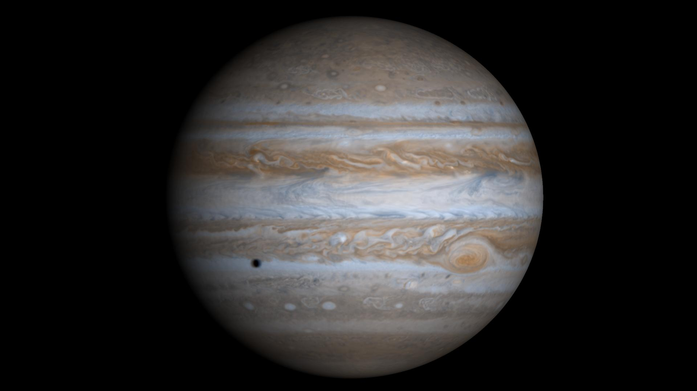
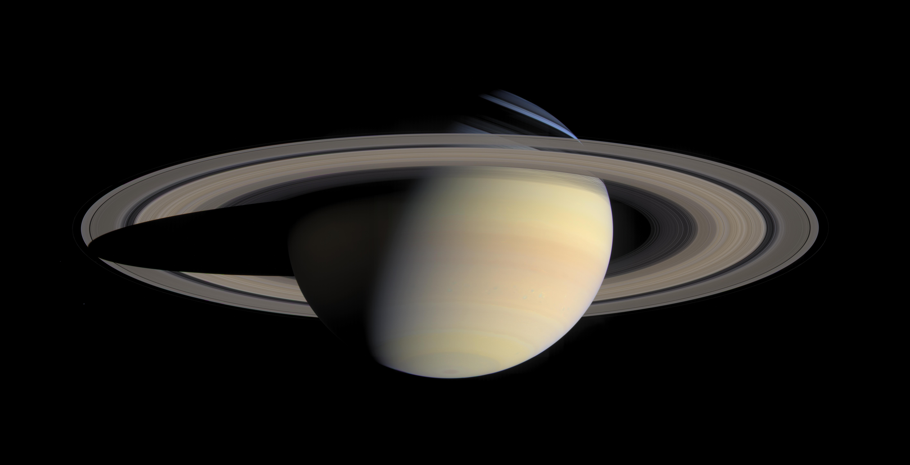
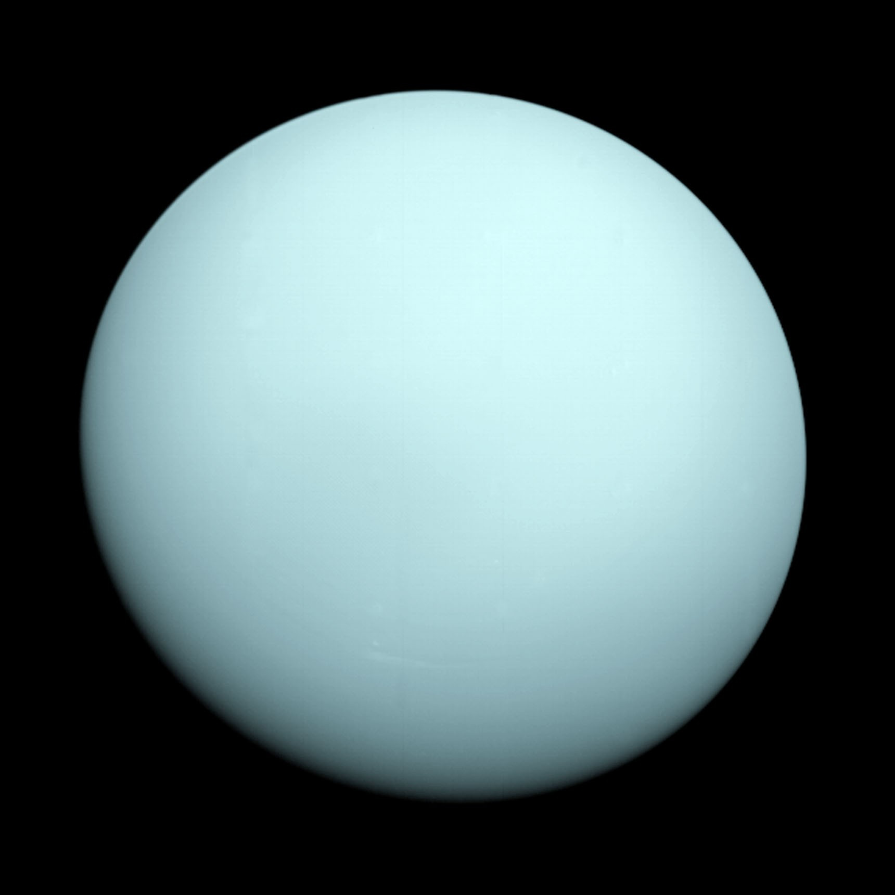
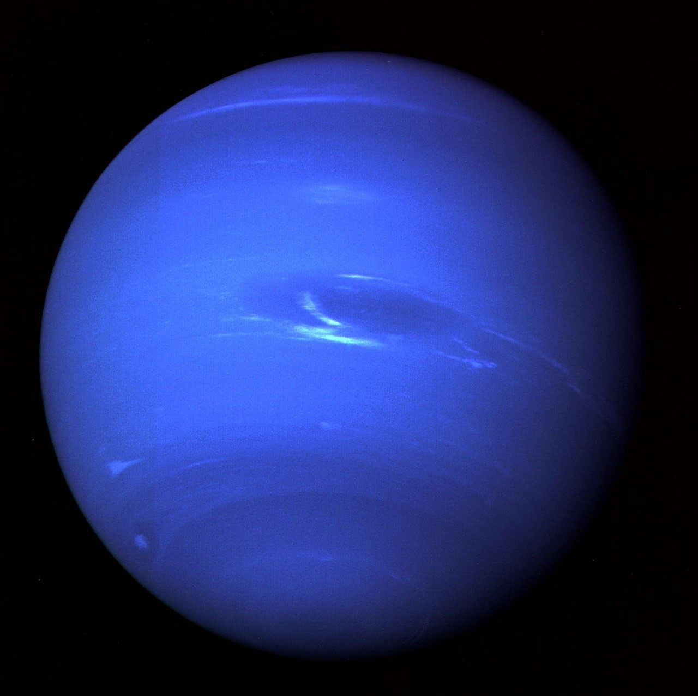

Sonnensystem
Unser Sonnensystem besteht aus der Sonne, acht Planeten, zahlreichen Monden, Asteroiden und weiteren Himmelskörpern. Die Planeten bewegen sich auf unterschiedlichen Bahnen um die Sonne. Sie unterscheiden sich in ihrer Größe, Temperatur, Zusammensetzung und Anzahl an Monden.
Die Sonne

Quelle:https://science.nasa.gov/photojournal/full-disk-image-of-the-sun-march-26-2007-anaglyph
Die Sonne befindet sich im Zentrum unseres Sonnensystems. Sie ist ein Stern und liefert Licht und Wärme. Ihre starke Gravitation sorgt dafür, dass die Planeten auf ihren Bahnen um sie kreisen.
Wusstest du schon?
Das Licht der Sonne braucht ungefähr 8 Minuten und 20 Sekunden, um die Erde zu erreichen.
Merkur

Quelle:https://science.nasa.gov/photojournal/mercury-globe-0n-0e/
Merkur ist der sonnennächste Planet und gleichzeitig der kleinste Planet unseres Sonnensystems. Auf seiner Oberfläche gibt es viele Krater. Weil Merkur fast keine Atmosphäre besitzt, gibt es dort sehr große Temperaturunterschiede zwischen Tag und Nacht.
Venus

Quelle:https://science.nasa.gov/gallery/venus/
Die Venus ist ungefähr so groß wie die Erde. Trotzdem herrschen auf ihrer Oberfläche extrem hohe Temperaturen. Ihre dichte Atmosphäre besteht hauptsächlich aus Kohlendioxid und sorgt für einen starken Treibhauseffekt.
Erde

Quelle:https://science.nasa.gov/resource/the-blue-marble/
Die Erde ist unser Heimatplanet und bisher der einzige bekannte Planet mit Leben. Ein großer Teil ihrer Oberfläche ist mit Wasser bedeckt. Außerdem besitzt die Erde eine Atmosphäre, die Leben ermöglicht und uns vor schädlicher Strahlung schützt.
Mars

Quelle:https://science.nasa.gov/asset/hubble/true-color-image-of-mars/
Der Mars wird auch der rote Planet genannt. Seine rötliche Farbe entsteht durch eisenhaltige Stoffe im Boden. Auf dem Mars gibt es riesige Vulkane, tiefe Täler und Hinweise darauf, dass dort früher Wasser vorhanden war.
Jupiter

Quelle:https://science.nasa.gov/resource/high-resolution-globe-of-jupiter/
Jupiter ist der größte Planet unseres Sonnensystems. Er besteht hauptsächlich aus Gasen und besitzt keine feste Oberfläche wie die Erde. Besonders bekannt ist der Große Rote Fleck, ein riesiger Sturm in seiner Atmosphäre.
Saturn

Quelle:https://science.nasa.gov/photojournal/saturn-in-color/
Saturn ist vor allem für sein auffälliges Ringsystem bekannt. Die Ringe bestehen aus Eis, Staub und Gesteinsbrocken. Saturn gehört wie Jupiter zu den Gasriesen und besitzt viele Monde.
Uranus

Quelle:https://science.nasa.gov/asset/webb/uranus-voyager-2/
Uranus ist ein Eisriese und besitzt eine blaugrüne Farbe. Diese Farbe entsteht durch Methan in seiner Atmosphäre. Besonders ungewöhnlich ist, dass Uranus fast auf der Seite liegend um die Sonne rotiert.
Neptun

Quelle:https://science.nasa.gov/image-detail/amf-2a9a3aef-acf0-4334-b13e-9adb839cf331/
Neptun ist der am weitesten von der Sonne entfernte Planet unseres Sonnensystems. Dort herrschen sehr starke Winde und extrem niedrige Temperaturen. Auch Neptun gehört zu den Eisriesen.
Reihenfolge der Planeten von der Sonne aus:
- Merkur
- Venus
- Erde
- Mars
- Jupiter
- Saturn
- Uranus
- Neptun
Die acht Planeten im Vergleich
| Planet | Durchmesser | Monde | Entfernung zur Sonne |
|---|---|---|---|
| Merkur | 4879km | 0 | 58 Mio km |
| Venus | 12.104km | 0 | 108 Mio km |
| Erde | 12.742km | 1 | 150 Mio km |
| Mars | 6779km | 2 | 228 Mio km |
| Jupiter | 139.820km | 115 | 778 Mio km |
| Saturn | 116.460km | 293 | 1,4 Milliarden km |
| Uranus | 50.724km | 29 | 2,9 Milliarden km |
| Neptun | 49.244km | 16 | 4,5 Milliarden km |